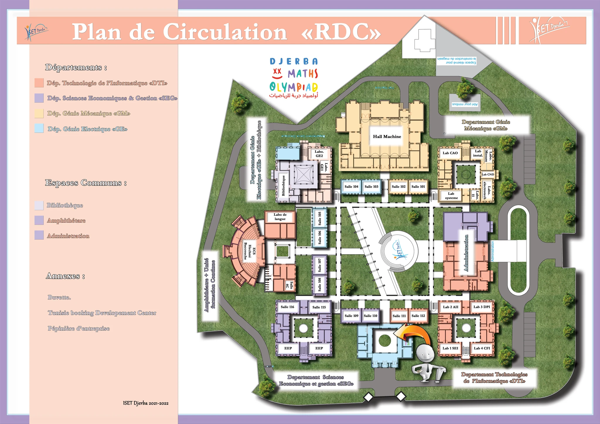

ISET DJERBA · CAMPUS NAVIGATOR
Ground-floor plan RDC
Loading campus data…
Drag · Wheel / pinch · Double-click to zoom

ISET DJERBA · CAMPUS NAVIGATOR
QUICK GUIDE
Type a room, lab, department or service.
Tap a result or marker on the plan.
Use Focus to center the place or Route to show the saved path.